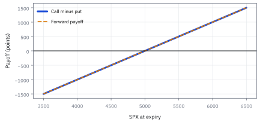
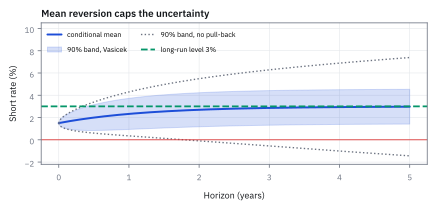

13.4 Solving Stochastic Differential Equations — Geometric Brownian Motion, Vasicek, and Cox–Ingersoll–Ross
สาม SDE ที่ต่างกันแค่ตัวคูณหน้า $dW$ ให้โลกคนละแบบ: ราคาหุ้นกระจายกว้างขึ้นไม่หยุด ดอกเบี้ยของ Vasicek ถูกดึงกลับจนความผันผวนชนเพดาน และ CIR ไม่ยอมให้ดอกเบี้ยติดลบ
ธนาคารถือพันธบัตรและเงินกู้จำนวนมาก มูลค่าของมันขึ้นกับดอกเบี้ยในอนาคต ระบบความเสี่ยงของธนาคารจึงต้องตอบให้ได้ว่า ปีหน้าดอกเบี้ยจะอยู่แถวไหน แกว่งได้กว้างแค่ไหน และมีโอกาสติดลบเท่าไร ดอกเบี้ยที่ระบบติดตามคือ short rate: ดอกเบี้ยต่อปีของการกู้ยืมช่วงสั้นมาก เช่นข้ามคืน
ของที่รู้ (ตัวเลขสมมติ):
- short rate วันนี้ $r_0=1.50\%$ ต่อปี
- ระบบเดิมจำลองดอกเบี้ยเป็น $r_t=0.015+0.012\,W_t$ โดย $W_t$ คือ Brownian motion: ผลรวมของแรงกระตุกสุ่มเล็ก ๆ (shock) ตั้งแต่วันนี้ถึงปีที่ $t$ มีค่าเฉลี่ยศูนย์และ variance เท่ากับ $t$ ดอกเบี้ยจึงเดินสุ่มขึ้นลงโดยไม่มีอะไรดึงกลับ
- ตัวคูณ $0.012$ บอกขนาดการแกว่ง: SD ของดอกเบี้ยที่ปีที่ $t$ คือ $0.012\sqrt t$ หรือ 1.2 จุดในหนึ่งปี (คำว่า “จุด” คือจุดเปอร์เซ็นต์ เช่น 1.50% ขึ้น 1.2 จุดเป็น 2.70%)
แบบจำลองนี้ให้ตัวเลขสี่ตัว ค่าเฉลี่ยปีหน้ายังเป็น 1.50% เพราะ $W_1$ มีค่าเฉลี่ยศูนย์ SD ปีหน้าและ SD ที่ 25 ปีมาจาก $0.012\sqrt t$ ส่วนโอกาสติดลบ ให้วัดว่าศูนย์อยู่ต่ำกว่าค่าเฉลี่ยกี่ SD แล้วเปิดค่า $\Phi(z)$ ของ Normal มาตรฐาน ($\Phi(z)$ คือโอกาสที่ค่าสุ่มซึ่งมีค่าเฉลี่ย 0 และ SD 1 ออกมาต่ำกว่า $z$):
สรุปคือ ปีหน้าเฉลี่ย 1.50% SD 1.20 จุด โอกาสติดลบ 10.6% และ SD ที่ 25 ปีข้างหน้า 6.00 จุด
แต่ดอกเบี้ยจริงไม่ได้เดินลอยไปเรื่อย ๆ ธนาคารกลางคอยดันมันกลับเข้าหาระดับปกติ แบบจำลอง Vasicek ใส่แรงดึงกลับนี้เข้าไป มันดึงดอกเบี้ยเข้าหาระดับระยะยาว $\theta=3.00\%$ ยิ่งห่างจาก 3.00% มากยิ่งดึงแรง ความแรงต่อปีคือ $\kappa=0.8$ คูณระยะห่างนั้น ส่วนขนาด shock ยังเท่าเดิม ตัวเลขสี่ตัวข้างบนจะเปลี่ยนเป็นเท่าไร?
ลองตอบก่อนเปิดเฉลย
หน้านี้จะคำนวณตัวเลขเหล่านี้ให้ดูทีละขั้น ผลคือ ปีหน้าดอกเบี้ยเฉลี่ย 2.33% SD 0.85 จุด และโอกาสติดลบ 0.30% ไม่ใช่ 10.6% ต่างกันราว $10.6/0.30\approx35$ เท่า ส่วน SD ไม่เกิน 0.95 จุดไม่ว่ามองไกลแค่ไหน ที่ 25 ปีจึงได้ 0.95 ไม่ใช่ 6.00
แรงดึงกลับทำสองอย่าง อย่างแรก มันยกค่าเฉลี่ยขึ้นห่างจากศูนย์ อย่างที่สอง มันทำให้ shock เก่าจางหายไป แทนที่จะสะสมไว้ตลอด
ภาพรวมก่อนลงสูตร
SDE (stochastic differential equation) คือสมการอนุพันธ์ที่มีแรงกระตุกสุ่มอยู่ด้วย เขียนในรูป $dX=a\,dt+b\,dW$ ส่วน $a\,dt$ คือแรงผลักที่รู้ล่วงหน้าในช่วงเวลาสั้น ๆ $dt$ เรียกว่า drift ส่วน $b\,dW$ คือ shock: $dW$ เป็นก้าวเล็ก ๆ ของ Brownian motion และ $b$ บอกว่า shock นั้นแรงแค่ไหน ถ้าตัด $b\,dW$ ทิ้ง ก็เหลือ ODE ธรรมดาที่วิศวกรคุ้นเคย
“แก้ SDE” แปลว่าเขียนค่าของตัวแปรในอนาคต เป็นสูตรของค่าวันนี้บวกกับ shock ทั้งหมดที่เกิดระหว่างทาง พอได้สูตรนี้ เราก็อ่านค่าเฉลี่ย ความกว้าง และรูปร่างของการกระจายออกมาได้ เครื่องมือมีสองชิ้นจากหน้าก่อน ๆ:
- Itô's lemma คือกฎลูกโซ่สำหรับตัวแปรสุ่ม ใช้เปลี่ยนตัวแปรให้สมการแก้ง่ายขึ้น
- Itô integral คือผลรวมของ shock ที่คูณด้วยน้ำหนักซึ่งรู้ก่อน shock มาถึง มันมีค่าเฉลี่ยศูนย์ และมี isometry ไว้หา variance
หน้านี้ใช้สองชิ้นนี้กับสาม SDE ที่ใช้จริง ตัวแรกคือ GBM ของราคาหุ้น ซึ่งไม่มีอะไรดึงกลับ shock ทุกตัวจึงค้างอยู่ในราคาตลอดไป อีกสองตัวคือ Vasicek และ CIR ของดอกเบี้ย ซึ่งมีแรงดึงกลับหาระดับระยะยาว
รูปด้านล่างแสดงความต่างนี้ เส้นสีเทาไม่มีแรงดึงกลับ จึงเดินหนีไปทั้งขึ้นและลงจนติดลบ เส้นสีน้ำเงินของ Vasicek ถูกดึงเข้าหา 3% แล้ววนอยู่แถวนั้น
ลำดับของหน้า: เทียบสามสมการ หาค่าเฉลี่ยของ Vasicek แก้สมการเต็ม หา variance แล้วตอบโจทย์เปิดเรื่อง จากนั้นอ่าน half-life และเพดานของความผันผวน ใช้คำตอบตั้งราคาพันธบัตร แล้วจบที่ CIR ว่าทำไมดอกเบี้ยไม่ติดลบ และเมื่อไรมันแตะศูนย์
รูป — เส้นทางดอกเบี้ยที่มีและไม่มีแรงดึงกลับ
ศัพท์ที่ใช้ในหัวข้อนี้
- Short rate
- ดอกเบี้ยต่อปีของการกู้ยืมช่วงสั้นมาก เช่นข้ามคืน คิดแบบทบต้นต่อเนื่อง แบบจำลองในหน้านี้ใช้มันเป็นตัวแปรสุ่มตัวเดียว แล้วคิดราคาพันธบัตรทุกอายุจากมัน
- จุด (percentage point)
- หน่วยของการเปลี่ยนแปลงดอกเบี้ย 1 จุดคือ 1% ต่อปี เช่นดอกเบี้ย 1.50% ขึ้น 1.2 จุดเป็น 2.70%
- Drift และ shock
- ใน SDE $dX=a\,dt+b\,dW$ ส่วน $a\,dt$ คือ drift: แรงผลักที่รู้ล่วงหน้า ส่วน $b\,dW$ คือ shock: แรงกระตุกสุ่มที่มีค่าเฉลี่ยศูนย์ $dW$ เป็นก้าวเล็ก ๆ ของ Brownian motion ที่มี variance เท่ากับ $dt$
- Mean reversion
- แรงที่ดึงตัวแปรกลับหาระดับระยะยาว $\theta$ เหมือนสปริง ยิ่งห่างยิ่งดึงแรง ความเร็ว $\kappa$ บอกว่า shock เก่าจางหายเร็วแค่ไหน ใช้กับสิ่งที่วนอยู่รอบระดับหนึ่ง เช่นดอกเบี้ย และส่วนต่างราคาของหุ้นสองตัวที่เคลื่อนไหวคู่กัน
- Vasicek model (Ornstein–Uhlenbeck)
- SDE ที่มีแรงดึงกลับ และมี shock ขนาดคงที่ไม่ว่าดอกเบี้ยอยู่ระดับไหน คำตอบเป็น Normal จึงคิดทุกอย่างได้ด้วยสูตร รวมทั้งราคาพันธบัตร ข้อเสียคือดอกเบี้ยติดลบได้
- Cox–Ingersoll–Ross (CIR) model
- SDE ที่มีแรงดึงกลับเหมือน Vasicek แต่ขนาด shock แปรตาม $\sqrt r$ shock จึงอ่อนลงเองเมื่อดอกเบี้ยเข้าใกล้ศูนย์ ใช้กับตัวแปรที่ห้ามติดลบ เช่นดอกเบี้ย หรือ variance ในแบบจำลอง Heston แลกกับการที่คำตอบไม่เป็น Normal
- Integrating factor
- ตัวคูณ $e^{\kappa t}$ ที่ทำให้สองพจน์ของสมการรวมกันเป็นอนุพันธ์ของผลคูณก้อนเดียว เป็นท่ามาตรฐานของการแก้ ODE เชิงเส้นอันดับหนึ่ง
- Itô isometry
- กฎหา variance ของ Itô integral: variance ของ $\int w(s)\,dW_s$ เท่ากับ $\int w(s)^2\,ds$ เพราะ shock แต่ละก้อนเป็นอิสระกัน และก้อนช่วง $ds$ มี variance $ds$
- Half-life
- เวลาที่ระยะห่างเฉลี่ยจาก $\theta$ หดเหลือครึ่งหนึ่ง เท่ากับ $\ln2/\kappa$ ใช้แปลง $\kappa$ ให้เป็นเวลาที่คนฟังเข้าใจ
- Zero-coupon bond (พันธบัตรศูนย์คูปอง)
- สัญญาที่จ่ายเงินก้อนเดียว เช่น \$1 ตอนครบอายุ $T$ ปี ไม่มีดอกเบี้ยจ่ายระหว่างทาง ราคาวันนี้จึงต่ำกว่า \$1 ส่วนที่ต่ำกว่าคือดอกเบี้ยที่ผู้ซื้อได้
- Feller condition
- เงื่อนไข $2\kappa\theta\ge\sigma_C^2$ ของ CIR ถ้าเป็นจริง ดอกเบี้ยไม่แตะศูนย์เลย ถ้าไม่จริง ดอกเบี้ยแตะศูนย์ได้แล้วเด้งกลับ
สัญลักษณ์และหน่วย
| สัญลักษณ์ | ความหมาย | หน่วย |
|---|---|---|
| $r_t,\ r_0$ | short rate ที่เวลา $t$ และวันนี้ | ทศนิยมต่อปี |
| $W_t,\ dW$ | Brownian motion (ผลรวมของ shock ถึงเวลา $t$) และก้าวเล็ก ๆ ของมัน | $\sqrt{\text{yr}}$ |
| $\theta,\ \kappa$ | ระดับระยะยาว และความเร็วของแรงดึงกลับ | ทศนิยมต่อปี, ต่อปี |
| $\sigma_V$ | ขนาด shock ของ Vasicek | ทศนิยมต่อ $\sqrt{\text{yr}}$ |
| $\sigma_C$ | ขนาด shock ของ CIR ซึ่งต้องคูณ $\sqrt r$ ก่อนใช้ | รากของทศนิยม ต่อ $\sqrt{\text{yr}}$ |
| $m_t,\ v_t$ | ค่าเฉลี่ยและ variance ของ $r_t$ มองจากวันนี้ | ทศนิยม, ทศนิยมกำลังสอง |
| $\Phi$ | CDF ของ Normal มาตรฐาน: $\Phi(z)$ คือโอกาสที่ค่าสุ่มต่ำกว่า $z$ | สัดส่วน |
| $S_t,\ \mu,\ \sigma$ | ราคา SPY, drift และความผันผวนของ GBM | ดอลลาร์ต่อหุ้น, ต่อปี, ต่อ $\sqrt{\text{yr}}$ |
| $t_{1/2}$ | half-life | ปี |
| $P(0,T),\ B$ | ราคาวันนี้ของพันธบัตรศูนย์คูปองที่จ่าย \$1 ในอีก $T$ ปี และน้ำหนักรวมที่ shock หนึ่งตัวมีต่อดอกเบี้ยทุกวันหลังจากนั้น | ดอลลาร์, ปี |
ขั้นที่ 1 — สามสมการ ต่างกันที่ตัวคูณหน้า dW
ก่อนแก้สมการใด ให้วางทั้งสามไว้ข้างกันในรูป $dX=a\,dt+b\,dW$ ก่อน เพราะความต่างที่สำคัญมองเห็นได้ตั้งแต่ตัวสมการ ในสมการของหุ้น $S$ คือราคา $\mu$ คืออัตราโตเฉลี่ยต่อปี และ $\sigma$ คือความผันผวน drift $\mu S$ จึงโตตามราคา ในสมการของดอกเบี้ย drift $\kappa(\theta-r)$ ชี้กลับหา $\theta$ เสมอ แต่สิ่งที่ตัดสินหน้าตาของเส้นทางคือตัวคูณ $b$ หน้า $dW$
สามสมการต่างกันแค่ตัวคูณหน้า $dW$ ใน GBM ตัวคูณคือ $\sigma S$ shock จึงเล็กลงตามราคา ราคาเข้าใกล้ศูนย์ได้แต่ไม่ติดลบ ใน Vasicek ตัวคูณคือ $\sigma_V$ ค่าคงที่ ดอกเบี้ยจึงถูกเขย่าแรงเท่าเดิมแม้อยู่ใกล้ศูนย์ และหลุดลงไปติดลบได้ ใน CIR ตัวคูณคือ $\sigma_C\sqrt r$ shock จึงหดลงเมื่อดอกเบี้ยต่ำ
ตัวคูณตัวเดียวนี้ตัดสินสองเรื่อง เรื่องแรกคือเส้นทางติดลบได้หรือไม่ เรื่องที่สองคือคำตอบเป็น Normal หรือไม่ ตัวคูณคงที่ของ Vasicek ให้คำตอบเป็น Normal ส่วนตัวคูณที่ขึ้นกับ $r$ ของ CIR ไม่ให้
รูป — สามรูปแบบของตัวคูณหน้า dW

ขั้นที่ 2 — แรงดึงกลับเป็นตัวเลข และค่าเฉลี่ยที่ได้โดยไม่ต้องแก้ SDE
คำถามแรกของโจทย์คือค่าเฉลี่ยของดอกเบี้ยปีหน้า ข่าวดีคือหาได้โดยยังไม่ต้องแก้ SDE ทั้งตัว ก่อนอื่นให้ดูว่าแรงดึง $\kappa(\theta-r)$ มีขนาดเท่าไรที่สามระดับ โดย $\kappa=0.8$ และ $\theta=3\%$ จากโจทย์
จากนั้นเอาค่าเฉลี่ยทั้งสองข้างของ SDE พจน์ $\sigma_V\,dW$ มีค่าเฉลี่ยศูนย์ เพราะ shock แต่ละก้อนขึ้นหรือลงได้เท่า ๆ กัน และตัวคูณ $\sigma_V$ รู้ก่อน shock มาถึง (สมบัติของ Itô integral) ที่เหลือคือ ODE ธรรมดาของค่าเฉลี่ย $m_t$ สุดท้ายให้ $d_t:=m_t-\theta$ เป็นระยะที่ค่าเฉลี่ยห่างจากเป้า เพื่อให้ ODE อยู่ในรูปที่แก้ง่าย
แรงดึงสามค่านี้บอกว่า drift ของ Vasicek ทำงานเหมือนสปริง ดอกเบี้ยที่ต่ำกว่าเป้า 1.5 จุดถูกดันขึ้นด้วยอัตรา 1.2 จุดต่อปี ดอกเบี้ยที่สูงกว่าเป้า 1.5 จุดถูกดึงลงเท่ากัน ที่เป้าพอดีไม่มีแรงเลย
เพราะแรงแปรตามระยะห่าง พอเข้าใกล้เป้า แรงก็อ่อนลง ระยะห่างจึงหดแบบ exponential: $d_t'=-\kappa d_t$ คือ ODE ของการสลายตัวแบบเดียวกับประจุในวงจร RC ได้ $d_t=d_0e^{-\kappa t}$ แล้วบวก $\theta$ กลับก็ได้ $m_t$ ในหนึ่งปี ระยะห่างเริ่มต้น $d_0=-1.5$ จุดหดเหลือ $-1.5\times0.449329=-0.674$ จุด ค่าเฉลี่ยจึงขึ้นมาที่ $3-0.674=2.326\%$
ค่าเฉลี่ยได้มาโดยไม่ต้องรู้เรื่องการกระจายเลย แต่คำถามเรื่องโอกาสติดลบต้องรู้ทั้งความกว้างและรูปร่าง ขั้นถัดไปจึงต้องแก้ SDE เต็ม
ขั้นที่ 3 — integrating factor ที่ตรวจด้วย Itô's lemma
ตอนนี้ต้องการสูตรของ $r_t$ ทั้งตัว ไม่ใช่แค่ค่าเฉลี่ย ปัญหาคือ $r$ อยู่ทั้งสองข้างของสมการ จึง integrate ตรง ๆ ไม่ได้ ถ้าย้ายพจน์ $-\kappa r\,dt$ ไปทางซ้าย จะได้ $dr+\kappa r\,dt$ ซึ่งหน้าตาเหมือน ODE เชิงเส้น $y'+\kappa y=\kappa\theta$ ที่วิศวกรแก้ด้วย integrating factor $e^{\kappa t}$ (ท่าเดียวกับที่ทำให้สมการเงินฝากทบต้นต่อเนื่อง $y'=ry$ ได้คำตอบ $y_t=y_0e^{rt}$ ในหน้า time value of money)
แต่ $r$ เป็นตัวแปรสุ่ม กฎลูกโซ่ปกติอาจขาดพจน์ไป จึงต้องใช้ Itô's lemma กับ $f(t,r)=e^{\kappa t}r$ เพื่อดูว่ามีพจน์พิเศษโผล่มาหรือไม่ Itô's lemma ต้องใช้อนุพันธ์ $f_t$, $f_r$ และ $f_{rr}$:
พจน์พิเศษของ Itô (Itô correction) คือ $\tfrac12f_{rr}\sigma_V^2\,dt$ มันมาจากความโค้งของ $f$ แต่ $f=e^{\kappa t}r$ เป็นเส้นตรงใน $r$ จึงได้ $f_{rr}=0$ และพจน์พิเศษหายไป ครั้งนี้กฎลูกโซ่ปกติให้คำตอบถูกพอดี
ท่าที่สำคัญคือการแทน $dr+\kappa r\,dt$ ด้วย $\kappa\theta\,dt+\sigma_V\,dW$ ซึ่งทำได้เพราะเป็นแค่ SDE ของ Vasicek ที่ย้ายข้าง หลังแทนแล้ว ฝั่งขวาไม่มี $r$ เหลืออยู่เลย จึงบวกทุกช่วงเวลาเล็ก ๆ ได้ตรง ๆ
ขั้นที่ 4 — บวกตลอดช่วง แล้วหารกลับ
ขั้นที่แล้วได้สมการที่ฝั่งขวาไม่มี $r$ ตอนนี้จึง integrate สองข้างจากเวลา 0 ถึง $t$ ได้เลย ฝั่งซ้ายเหลือ $e^{\kappa t}r_t-e^0r_0$ ฝั่งขวามีสองส่วน ส่วนของ $dt$ เป็น integral ธรรมดา $\int_0^t\kappa\theta e^{\kappa s}\,ds=\theta(e^{\kappa t}-1)$ ส่วนของ $dW$ เป็น Itô integral ซึ่งตัวคูณ $e^{\kappa s}$ รู้ล่วงหน้า (ใช้ $s$ แทนเวลาระหว่างทาง เพื่อไม่ให้ปนกับเวลาปลายทาง $t$) สุดท้ายหารทั้งสองข้างด้วย $e^{\kappa t}$ เพื่อให้เหลือ $r_t$ ตัวเดียว
คำตอบแบ่งเป็นสองส่วน ส่วนที่ไม่สุ่ม $\theta+(r_0-\theta)e^{-\kappa t}$ คือค่าเฉลี่ย $m_t$ ตัวเดียวกับที่ได้จาก ODE ในขั้นที่แล้ว สองทางให้ผลตรงกัน ส่วนที่สุ่มคือ shock ทุกตัวที่เกิดระหว่างทาง shock ที่เกิดตอนเวลา $s$ ถูกคูณด้วยน้ำหนัก $e^{-\kappa(t-s)}$ โดย $t-s$ คืออายุของ shock นั้น ยิ่งเก่า น้ำหนักยิ่งเล็ก
ที่ $\kappa=0.8$ shock เมื่อหนึ่งปีก่อนเหลือน้ำหนัก $e^{-0.8}=0.449$ และ shock เมื่อห้าปีก่อนเหลือ $e^{-0.8\times5}=e^{-4}=0.018$ ดอกเบี้ยจึง “ลืม” อดีต ต่างจาก Brownian motion ธรรมดาที่ shock ทุกตัวอยู่ใน $W_t$ ด้วยน้ำหนัก 1 ตลอดไป
ระวังเครื่องหมาย: $r_0$ คูณ $e^{-\kappa t}$ ไม่ใช่ $e^{+\kappa t}$ ถ้าเขียนผิดเป็นบวก ค่าเฉลี่ยจะโตระเบิดแทนที่จะเข้าหา $\theta$ (ตัวเลขอยู่ในหัวข้อความผิดท้ายหน้า)
รูป — shock เก่าเหลือน้ำหนักเท่าไรในดอกเบี้ยวันนี้
ขั้นที่ 5 — รูปร่าง Normal และ variance จาก isometry
ค่าเฉลี่ยได้แล้ว แต่โอกาสติดลบต้องรู้อีกสองอย่าง คือรูปร่างของการกระจาย และความกว้างของมัน ทั้งสองอย่างอ่านได้จากพจน์สุ่ม $\sigma_V\int_0^te^{-\kappa(t-s)}\,dW_s$
เรื่องรูปร่าง: คิดว่าพจน์สุ่มคือผลรวมของก้อนเล็ก ๆ $\sigma_Ve^{-\kappa(t-s)}\Delta W$ ตัวคูณของแต่ละก้อนเป็นตัวเลขที่รู้ล่วงหน้า ก้อน $\Delta W$ แต่ละก้อนเป็น Normal และอิสระกัน ผลรวมของ Normal ที่อิสระกันยังเป็น Normal พจน์สุ่มจึงเป็น Normal ค่าเฉลี่ยศูนย์
เรื่องความกว้าง: ใช้ Itô isometry ก้อนช่วง $ds$ มี variance $ds$ และก้อนเป็นอิสระกัน ถ้าให้ $w$ เป็นตัวคูณของก้อนหนึ่ง ก้อนนั้นมี variance $w^2\,ds$ variance ของผลรวมจึงเท่ากับ $\int w^2\,ds$ ระหว่างทางเปลี่ยนตัวแปรเป็นอายุของ shock $u=t-s$ ให้ integral ง่ายขึ้น
ดอกเบี้ยที่เวลา $t$ เป็น Normal ที่มีค่าเฉลี่ย $m_t$ และ variance $v_t$ จุดที่ต้องระวังคือตัวหาร $2\kappa$ ไม่ใช่ $\kappa$ มันมาจากการที่ isometry ยกตัวคูณกำลังสองก่อน integrate น้ำหนัก $e^{-\kappa u}$ จึงกลายเป็น $e^{-2\kappa u}$
เมื่อ $t$ โตขึ้น $e^{-2\kappa t}$ เข้าหาศูนย์ variance จึงไม่โตไปเรื่อย ๆ แต่เข้าหาค่าคงที่ $\sigma_V^2/(2\kappa)$ ค่านี้คือเพดานของความไม่แน่นอน มองไกลแค่ไหนก็ไม่เกินนี้
ขั้นที่ 6 — คำตอบของโจทย์เปิดเรื่อง: หนึ่งปีข้างหน้า
โจทย์ให้อะไรมาบ้าง: ตัวเลขชุดเดียวกับโจทย์เปิดเรื่อง
- short rate วันนี้ $r_0=1.50\%$
- ระดับระยะยาว $\theta=3.00\%$
- ความเร็วของแรงดึงกลับ $\kappa=0.8$ ต่อปี
- ขนาด shock $\sigma_V=0.012$ ต่อ $\sqrt{\text{yr}}$ (1.2 จุดต่อปี)
ค่าเฉลี่ย $m_1$ ได้แล้วจากขั้นที่ 2 ที่เหลือคือแทนตัวเลขลงในสูตร variance $v_t$ ที่ $t=1$ แล้ววัดว่าศูนย์อยู่ต่ำกว่าค่าเฉลี่ยกี่ SD และเปิดค่า $\Phi$ ของ Normal มาตรฐาน ตัวเลขที่ใช้คือ $\sigma_V^2=0.012^2=0.000144$ และ $2\kappa=1.6$
คำตอบ: ดอกเบี้ยปีหน้าเฉลี่ย 2.326% SD 0.8475 จุด โอกาสติดลบ 0.30% หรือราว 3 ใน 1,000 เส้นทาง
แบบจำลองที่ไม่มีแรงดึงกลับให้ $\Phi(-1.25)=10.6\%$ (คำนวณไว้ในโจทย์เปิดเรื่อง) มากกว่ากันราว $10.6/0.303\approx35$ เท่า สาเหตุมีสองข้อ ข้อแรก ค่าเฉลี่ยของมันค้างอยู่ที่ 1.5% ใกล้ศูนย์กว่า ข้อสอง SD ของมันคือ 1.2 จุด กว้างกว่า 0.8475 จุด
ถ้ามองไกลถึงห้าปี ใช้สูตรเดิมที่ $t=5$:
ค่าเฉลี่ยขึ้นมาเกือบถึง 3% SD กว้างขึ้นเล็กน้อยเป็น 0.9485 จุด และโอกาสติดลบลดเหลือ 0.086% เพราะค่าเฉลี่ยหนีห่างจากศูนย์เร็วกว่าที่ SD กว้างขึ้น
ตรวจเองใน 10 วินาที: ศูนย์อยู่ต่ำกว่าค่าเฉลี่ย $2.326/0.8475\approx2.74$ SD และพื้นที่หางซ้ายของระฆังที่เลย 2.7 SD คือราว 0.3% ตรงกัน ส่วน SD ปีหน้าต่ำกว่า 1.2 จุด เพราะ shock ช่วงต้นปีจางไปบางส่วนแล้วเมื่อถึงสิ้นปี
รูป — ค่าเฉลี่ยและแถบ 90% ของ Vasicek

ขั้นที่ 7 — half-life และเพดานของความผันผวน เทียบกับ GBM
ถ้าบอกหัวหน้าว่า “$\kappa=0.8$ ต่อปี” เขาคงไม่รู้ว่าเร็วหรือช้า ภาษาที่คนเข้าใจคือ half-life: เวลาที่ระยะห่างจากเป้าหายไปครึ่งหนึ่ง หาได้จากการตั้งน้ำหนัก $e^{-\kappa t}$ ให้เท่ากับ 0.5
จากนั้นเทียบ SD สามแบบที่ 1, 5 และ 25 ปี แบบแรกคือ Vasicek $\sqrt{v_t}$ แบบที่สองคือแบบจำลองไม่มีแรงดึงกลับ $\sigma_V\sqrt t$ แบบที่สามคือราคาหุ้นแบบ GBM โดยใช้ SPY เป็นตัวอย่าง (SPY คือกองทุนที่ซื้อขายเหมือนหุ้นและวิ่งตามดัชนี S&P 500) ให้ความผันผวน $\sigma=18\%$ ต่อปี (สมมติ ใกล้ค่าที่ SPY มักมี) หน้า Itô's lemma แก้ GBM ไว้แล้วว่า $\ln S_t=\ln S_0+(\mu-\tfrac12\sigma^2)t+\sigma W_t$ SD ของ $\ln S_t$ จึงเป็น $\sigma\sqrt t$
ระยะห่างจากเป้าหายไปครึ่งหนึ่งใน 0.8664 ปี หรือ $0.8664\times12=10.4$ เดือน นี่คือความหมายของ $\kappa=0.8$ ในภาษาคน
SD ของ Vasicek ขึ้นถึงเพดานเร็วมาก ปีแรกได้ $0.8475/0.9487=89.3\%$ ของเพดานแล้ว และที่ห้าปีได้ $0.9485/0.9487=99.98\%$ ส่วนแบบจำลองไม่มีแรงดึงกลับกว้างขึ้นตามรากของเวลาไม่หยุด ที่ 25 ปีกว้างกว่าเพดาน $6.00/0.9487=6.3$ เท่า เพดานเกิดขึ้นเพราะแรงดึงกลับหักล้างการสะสมของ shock พอดี shock ใหม่เข้ามาเท่าไร shock เก่าก็จางออกไปเท่านั้น
GBM อยู่ฝั่งเดียวกับแบบจำลองไม่มีแรงดึงกลับ บนแกน log SD โตเป็น 0.90 ที่ 25 ปี ถ้าแปลงกลับเป็นราคา ช่วงหนึ่ง SD คือ $e^{-0.90}=0.41$ ถึง $e^{0.90}=2.46$ เท่าของ median (ราคาที่อยู่ตรงกลาง ครึ่งหนึ่งต่ำกว่า ครึ่งหนึ่งสูงกว่า)
ทำไมราคาหุ้นไม่มีระดับให้กลับไปหา? เพราะถ้ามี ใครก็ซื้อตอนราคาต่ำกว่าระดับ แล้วขายตอนสูงกว่า ได้กำไรแทบแน่นอน คนแห่ทำแบบนี้จนแรงดึงหายไป ส่วนดอกเบี้ยมีระดับได้ เพราะธนาคารกลางใช้นโยบายการเงินกำหนดทิศของมัน
รูป — SD ของดอกเบี้ยในอนาคตตามระยะที่มองไป
ขั้นที่ 8 — ใช้คำตอบตั้งราคาพันธบัตร
ทำไมต้องทำขั้นนี้: บนโต๊ะดอกเบี้ย สิ่งที่ซื้อขายกันจริงไม่ใช่ short rate แต่คือพันธบัตร ตัวที่ง่ายที่สุดคือพันธบัตรศูนย์คูปอง: สัญญาที่จ่าย \$1 ครั้งเดียวในอีก $T$ ปี ไม่มีดอกเบี้ยจ่ายระหว่างทาง ให้ $P(0,T)$ เป็นราคาวันนี้ของมัน คำถามคือคำตอบของ Vasicek บอกราคานี้ได้ไหม
โจทย์ให้อะไรมาบ้าง: พารามิเตอร์ชุดเดิม ($r_0=1.5\%$, $\theta=3\%$, $\kappa=0.8$, $\sigma_V=0.012$) และพันธบัตรอายุ $T=1$ ปี
ถ้ารู้ล่วงหน้าว่าดอกเบี้ยจะเป็น $r_t$ ทุกช่วง เงิน \$1 ที่ปลายทางมีค่าวันนี้ $e^{-\int_0^Tr_t\,dt}$ คือคิดลดย้อนกลับแบบทบต้นต่อเนื่องทีละช่วงเล็ก ๆ แต่ $r_t$ สุ่ม ราคาจึงเป็นค่าเฉลี่ยของปริมาณนี้ (ค่าเฉลี่ยที่ใช้ตั้งราคาต้องคิดใต้ risk-neutral measure ขั้นนี้สมมติว่าพารามิเตอร์ชุดนี้เป็นชุดสำหรับตั้งราคาแล้ว)
ให้ $Y=\int_0^Tr_t\,dt$ คือดอกเบี้ยสะสมทั้งช่วง $Y$ เป็น Normal เพราะ shock $dW_s$ แต่ละตัวเข้าไปใน $Y$ ด้วยน้ำหนักที่รู้ล่วงหน้า น้ำหนักนั้นคือผลรวมของน้ำหนัก $e^{-\kappa(t-s)}$ ที่ shock มีต่อดอกเบี้ยทุกวัน $t$ หลังจากมันเกิด เรียกว่า $B(s,T)=\int_s^Te^{-\kappa(t-s)}\,dt$
ให้ค่าเฉลี่ยของ $Y$ เป็น $M$ และ variance เป็น $V$ ค่าเฉลี่ยได้จากการ integrate $m_t$ ส่วน variance ได้จาก isometry อีกครั้ง โดยใช้ $B$ เป็นตัวคูณ สุดท้ายใช้ผลของ lognormal: ถ้า $Y$ เป็น Normal ค่าเฉลี่ยของ $e^{-Y}$ คือ $e^{-M+V/2}$ ระหว่างทาง เขียน $B^2$ เป็นสามพจน์โดยใช้อายุ $u=T-s$ แล้ว integrate ทีละพจน์
ตัวเลขที่แทนมาจาก $\sigma_V^2/\kappa^2=0.000144/0.64=0.000225$, $2(1-e^{-0.8})/0.8=1.376678$ และ $(1-e^{-1.6})/1.6=0.498815$
คำตอบ: พันธบัตรหนึ่งปีราคา \$0.980531 ต่อเงิน \$1 ที่จะได้ ถ้าแปลงเป็นดอกเบี้ยต่อปีแบบทบต้นต่อเนื่อง (เรียกว่า yield) ได้ $-\ln P/T=-\ln0.980531=1.9661\%$
yield นี้ต่ำกว่าดอกเบี้ยเฉลี่ยของปี $M=1.9675\%$ อยู่ $V/2=0.0014$ จุด ส่วนต่างนี้เรียกว่า convexity มันเกิดเพราะ $e^{-x}$ เป็นเส้นโค้งหงาย ค่าเฉลี่ยของ $e^{-Y}$ จึงสูงกว่า $e^{-M}$ เสมอ ราคาสูงขึ้นแปลว่า yield ต่ำลง
ถ้าทำแบบเดียวกันกับทุกอายุ $T$ (โค้ดท้ายหน้าคำนวณให้) จะได้เส้น yield ในรูปด้านล่าง: 1.97% ที่หนึ่งปี 2.62% ที่ห้าปี และ 2.80% ที่สิบปี เมื่อ $T$ ยาวมาก $M/T$ เข้าหา $\theta$ และ $V/T$ เข้าหา $\sigma_V^2/\kappa^2$ yield จึงเข้าหา
ตรวจเองใน 10 วินาที: หน้า Feynman–Kac หาสูตรราคาพันธบัตรของ Vasicek อีกทางหนึ่งจากสมการอนุพันธ์ย่อย ได้ $P=e^{A-Br_0}$ โดย $B=B(0,T)$ แทนตัวเลขแล้วต้องได้ตัวเลขเดิม:
ได้ $e^{-0.019661}$ ตรงกันทุกหลัก
$B$ บอกความเสี่ยงของพันธบัตรด้วย: ราคา $P=e^{A-Br}$ เป็นฟังก์ชันของ $r$ อนุพันธ์คือ $\partial P/\partial r=-BP$ Itô's lemma บอกว่าส่วนสุ่มของ $dP$ คือ $\partial P/\partial r$ คูณส่วนสุ่มของ $dr$ ได้ $-BP\,\sigma_V\,dW$ หารด้วย $P$ แล้ว ความผันผวนของราคาพันธบัตรคือ $\sigma_VB$
พันธบัตรหนึ่งปีมีความผันผวน 0.83% ต่อปี พันธบัตรสิบปี 1.50% และไม่ว่าอายุยาวแค่ไหนก็ไม่เกิน 1.5% เพราะ $B$ ไม่เกิน $1/\kappa$
รูป — เส้น yield ของพันธบัตรจาก Vasicek
ขั้นที่ 9 — CIR: ทำไมศูนย์เป็นพื้น และค่าเฉลี่ยกับ SD ที่หาได้จาก Itô
ทำไมต้องมี CIR: Vasicek ให้โอกาสติดลบ 0.30% ในหนึ่งปี ในตลาดที่ดอกเบี้ยติดลบไม่ได้ ตัวเลขนี้เป็นปัญหา CIR แก้โดยให้ shock มีขนาด $\sigma_C\sqrt r$ แทนค่าคงที่ เมื่อดอกเบี้ยต่ำ shock ก็เล็กลงเอง
ใช้ $\kappa=0.8$ และ $\theta=3\%$ ชุดเดิม และให้ $\sigma_C=0.10$ (สมมติ) ระวังว่า $\sigma_C$ ไม่ใช่ขนาด shock ตรง ๆ ต้องคูณ $\sqrt r$ ก่อน ที่ระดับ 3% shock มีขนาด $0.10\sqrt{0.03}=0.0173$ ต่อปี ขั้นนี้ทำสองอย่าง อย่างแรก ดูว่าเกิดอะไรกับ drift และ shock เมื่อ $r$ ลงไปใกล้ศูนย์ อย่างที่สอง หาค่าเฉลี่ยและ SD ของ CIR
ค่าเฉลี่ยได้ง่าย: drift $\kappa(\theta-r)$ เหมือน Vasicek ทุกตัวอักษร และ shock มีค่าเฉลี่ยศูนย์เหมือนเดิม จึงได้ $m_t$ สูตรเดิม ส่วน variance ต้องรู้ค่าเฉลี่ยของ $r^2$ ก่อน เรียกว่า $Q_t:=\mathbb E[r_t^2]$ (variance คือ $Q_t-m_t^2$) ใช้ Itô กับ $f=r^2$ ซึ่งมี $f_r=2r$ และ $f_{rr}=2$ ส่วน $b^2$ ของ CIR คือ $(\sigma_C\sqrt r)^2=\sigma_C^2r$ แล้วเอาค่าเฉลี่ยทั้งสองข้าง
ใกล้ศูนย์ แรงดันขึ้นยังอยู่ครบ $\kappa\theta=0.024$ ต่อปี แต่แรงเขย่าหายไป ที่ดอกเบี้ย 0.01% แรงเขย่าของ CIR เหลือ 0.001 เล็กกว่า 0.012 ของ Vasicek $0.012/0.001=12$ เท่า แรงดันจึงชนะ และผลักดอกเบี้ยกลับขึ้น CIR ในเวลาต่อเนื่องจึงไม่ติดลบ
ราคาที่ต้องจ่ายคือคำตอบไม่เป็น Normal อีกต่อไป (มันเป็นการกระจายแบบ noncentral chi-square ที่ปรับสเกล) CIR จึงไม่มีสูตรเส้นทางแบบ Vasicek แต่ค่าเฉลี่ย variance และราคาพันธบัตรยังมีสูตรปิด
ท่าที่ทำให้หา variance ได้คือ ค่าเฉลี่ยของพจน์ $dW$ เป็นศูนย์ เหลือ ODE ของ $Q_t$ ที่เป็นเส้นตรงอันดับหนึ่ง แก้ด้วย integrating factor $e^{2\kappa t}$ แบบเดียวกับ Vasicek แล้วหัก $m_t^2$ ออก ได้ variance และตัวเลขด้านล่าง
ปีหน้า CIR ให้ค่าเฉลี่ย 2.326% เท่ากับ Vasicek แต่ SD 1.016 จุด กว้างกว่า 0.8475 จุดของ Vasicek เพราะที่ระดับดอกเบี้ยแถว 2% ถึง 3% shock ของ CIR ($0.0173$ ที่ 3%) แรงกว่า 0.012 ของ Vasicek เมื่อมองไกลมาก SD เข้าหาเพดาน 1.369 จุด
ขั้นที่ 10 — ไม่ติดลบ ยังไม่แปลว่าไม่แตะศูนย์: Feller condition
CIR ไม่ติดลบ แต่ยังมีคำถามต่อ: ดอกเบี้ยลงไปแตะศูนย์พอดีได้ไหม เรื่องนี้สำคัญ เพราะถ้าแบบจำลองใช้กับ variance ใน Heston การที่ variance แตะศูนย์บ่อย ๆ ทำให้การคำนวณยากขึ้นมาก ใกล้ศูนย์มีของสองอย่างแข่งกัน คือแรงดันขึ้น $\kappa\theta$ กับแรงเขย่า $\sigma_C\sqrt r$ ซึ่งอาจเหวี่ยงดอกเบี้ยลงไปถึงศูนย์
วิธีดูว่าใครชนะคือดู $\ln r$ แทน $r$ เพราะ $r$ แตะศูนย์ก็ต่อเมื่อ $\ln r$ ดิ่งลงไปถึงลบอนันต์ ใช้ Itô กับ $f=\ln r$ ซึ่งมี $f_r=1/r$ และ $f_{rr}=-1/r^2$ แล้วนิยามอัตราส่วน $2\kappa\theta/\sigma_C^2$ ไว้ใช้ตัดสิน และลองสองค่าของ $\sigma_C$: ค่าเดิม 0.10 และค่าที่เขย่าแรงขึ้น 0.25 (สมมติ)
หัวใจอยู่ที่ drift ของ $\ln r$ เมื่อ $r$ เล็กมาก พจน์ $(\kappa\theta-\tfrac12\sigma_C^2)/r$ ใหญ่กว่าทุกอย่าง ถ้าตัวเศษเป็นบวก drift นี้ยิ่งพุ่งขึ้นเมื่อ $r$ เข้าใกล้ศูนย์ มันผลัก $\ln r$ ขึ้นแรงกว่าที่ shock จะดึงลงไปถึงลบอนันต์ได้ ดอกเบี้ยจึงไม่แตะศูนย์ ถ้าตัวเศษติดลบ drift กลับช่วยดึงลงอีกแรง ดอกเบี้ยจึงแตะศูนย์ได้แล้วเด้งกลับขึ้นมา
ตัวเศษเป็นบวกเมื่อ $\kappa\theta\gt\tfrac12\sigma_C^2$ หรือคูณสองข้างด้วย 2 ได้ $2\kappa\theta\gt\sigma_C^2$ นี่คือ Feller condition เขียนอีกแบบคืออัตราส่วนต้องมากกว่า 1 (กรณีเท่ากันพอดีก็ยังไม่แตะ ผลนี้พิสูจน์ละเอียดในตำรา SDE) ค่า $\sigma_C=0.10$ ให้อัตราส่วน 4.8 ผ่านสบาย ๆ ค่า $\sigma_C=0.25$ ให้ 0.768 ไม่ผ่าน
โค้ดท้ายหน้าทดสอบเรื่องนี้ด้วยการเดิน CIR วันละก้าว นานห้าปี ค่าละ 2,000 เส้นทาง แต่ละก้าวคือ $\Delta r=\kappa(\theta-r^+)\Delta t+\sigma_C\sqrt{r^+\Delta t}\,Z$ โดย $\Delta t=1/252$ ปี (หนึ่งปีมีวันทำการราว 252 วัน) $Z$ คือเลขสุ่ม Normal มาตรฐาน และ $r^+=\max(r,0)$ ถ้าก้าวไหนทำให้ $r$ ติดลบ ก็ตั้งเป็นศูนย์ (วิธีนี้เรียก full truncation ใช้เพราะก้าวที่ไม่ต่อเนื่องหลุดต่ำกว่าศูนย์ได้ แม้สมการต่อเนื่องจะไม่หลุด) ผลคือ อัตราส่วน 4.8 ไม่มีเส้นไหนแตะศูนย์เลย อัตราส่วน 0.768 แตะศูนย์ 73.5% ของเส้นทาง
รูป — เส้นทาง CIR กับพื้นที่ศูนย์
ขั้นที่ 11 — ตรวจสูตรของ Vasicek ด้วยการเดิน SDE ทีละวัน
ทำไมต้องทำขั้นนี้: สูตรของ Vasicek ผ่านการคำนวณหลายขั้น ถ้ามีเครื่องหมายผิดสักตัว ตัวเลขทั้งหน้าก็ผิด วิธีตรวจที่ไม่พึ่งสูตรเลยคือให้คอมพิวเตอร์เดิน SDE ทีละวันจริง ๆ หลายหมื่นรอบ แล้วนับผล
โจทย์ให้อะไรมาบ้าง: โค้ดท้ายหน้าทำแบบนี้
- แต่ละก้าวคือ $\Delta r=\kappa(\theta-r)\Delta t+\sigma_V\sqrt{\Delta t}\,Z$ โดย $\Delta t=1/252$ ปี (หนึ่งปีมีวันทำการราว 252 วัน) และ $Z$ คือเลขสุ่ม Normal มาตรฐาน
- เดิน 252 ก้าวให้ครบหนึ่งปี ทำ 20,000 เส้นทาง ด้วย seed 134
- ใช้พารามิเตอร์ชุดเดิม และไม่ใช้สูตรค่าเฉลี่ยหรือ variance เลย
ตัวเลขจากการสุ่มย่อมคลาดจากค่าจริงบ้าง ขนาดความคลาดปกติวัดด้วย SE (standard error) คือ SD ของตัวเลขนั้นถ้าสุ่มชุดใหม่ซ้ำหลายครั้ง คอลัมน์สุดท้ายคือ (ค่าจากการสุ่ม − ค่าจากสูตร) หารด้วย SE ถ้าอยู่ระหว่าง −2 ถึง 2 ถือว่าคลาดตามปกติ
| ค่าที่ปลายปี | สูตร | ได้จากการเดิน SDE | ห่างกี่ SE |
|---|---|---|---|
| ค่าเฉลี่ย | 2.3260% | 2.3252% | −0.1 |
| SD | 0.8475% | 0.8450% | −0.6 |
| สัดส่วนที่ติดลบ | 0.303% | 0.230% | −1.9 |
SE ของแต่ละแถวคิดจากสูตรมาตรฐานของการสุ่ม $N=20{,}000$ เส้นทาง: ค่าเฉลี่ยใช้ $\text{SD}/\sqrt N$ SD ใช้ $\text{SD}/\sqrt{2N}$ และสัดส่วน $p$ ใช้ $\sqrt{p(1-p)/N}$
คำตอบ: ค่าเฉลี่ยและ SD ตรงกับสูตรภายใน 1 SE แถวสุดท้ายห่าง 1.9 SE ยังอยู่ในช่วงปกติ ที่มันห่างมากกว่าแถวอื่น เพราะเหตุการณ์ 0.3% เกิดน้อย คาดว่าจะเกิดแค่ $20{,}000\times0.00303\approx61$ เส้นทาง (ได้จริง $20{,}000\times0.0023=46$) การวัดหางด้วยการสุ่มจึงหยาบกว่าการวัดค่าเฉลี่ยมาก นี่เป็นเหตุผลหนึ่งที่สูตรปิดมีค่า
ตรวจเองใน 10 วินาที: ค่าเฉลี่ยห่างจากสูตร $2.3260-2.3252=0.0008\%$ คิดเป็น $0.0008/0.0060\approx0.13$ SE ตรงกับ −0.1 ในตาราง (เครื่องหมายลบเพราะค่าจากการสุ่มต่ำกว่าสูตร)
ความผิดที่ให้ตัวเลขผิดโดยไม่มีใครเตือน
ใช้ Brownian motion ธรรมดากับดอกเบี้ย: ไม่มีแรงดึงกลับ ช่วงของดอกเบี้ยจึงกว้างเกินจริงมาก
โอกาสติดลบในหนึ่งปีเป็น 10.6% แทน 0.30% เกินจริงราว 35 เท่า และ SD ที่ 25 ปีเป็น 6.00 จุดแทน 0.95 จุด เกินจริงราว 6.3 เท่า ราคาพันธบัตรอายุยาวและ option บนดอกเบี้ยที่คิดจากช่วงกว้างขนาดนั้นจะผิดไปมาก
เขียนเครื่องหมายของ $e^{-\kappa t}$ ผิด: คำตอบที่ถูกคือ $m_t=e^{-\kappa t}r_0+\theta(1-e^{-\kappa t})$ ถ้าพิมพ์ $e^{+\kappa t}r_0$ แทน ค่าเฉลี่ยห้าปีจะระเบิด
ได้ 84.8% แทน 2.97% วิธีตรวจง่าย ๆ: ที่ $t=0$ สูตรต้องให้ $r_0$ และเมื่อ $t$ โตขึ้นต้องเข้าหา $\theta$
ใช้ $\kappa$ ต่อปีกับเวลาที่นับเป็นเดือน: ใส่ $t=12$ แทน $t=1$ ทำให้ $\kappa t=0.8\times12=9.6$ แทน 0.8
ค่าเฉลี่ยหนึ่งปีกลายเป็น 2.9999% คือแทบถึงเป้าแล้ว แทนที่จะเป็น 2.326% จึงต้องเขียนหน่วยของ $\kappa$ กำกับไว้ทุกครั้ง
ลืมเลข 2 ในตัวหารของ variance: ใช้ $\sigma_V^2/\kappa$ แทน $\sigma_V^2/(2\kappa)$
เพดาน SD กลายเป็น 1.342% แทน 0.9487% กว้างเกินไป $\sqrt2=1.414$ เท่า เลข 2 มาจากการที่ isometry ยกตัวคูณกำลังสองก่อน integrate
ใช้ทำอะไรบนโต๊ะจริง
โต๊ะดอกเบี้ย (ทีมที่ซื้อขายและดูแลพันธบัตรกับสัญญาดอกเบี้ยของธนาคาร) ใช้ Vasicek และ CIR สองแบบ แบบแรก จำลองดอกเบี้ยในอนาคตหลายหมื่นเส้นทาง เพื่อดูว่าพอร์ตพันธบัตรอาจขาดทุนได้แค่ไหน แบบที่สอง ตั้งราคาพันธบัตรด้วยสูตรปิด $P=e^{A-Br}$ ซึ่งมีทั้งสองแบบจำลอง สำหรับ CIR สูตรของ $B$ คือ $2/(\kappa+\gamma\coth(\gamma T/2))$ เมื่อ $\gamma=\sqrt{\kappa^2+2\sigma_C^2}$
แต่ derivative ส่วนใหญ่บน CIR (สัญญาที่มูลค่าขึ้นกับดอกเบี้ย เช่น option บนพันธบัตร) ไม่มีสูตรปิด ต้องใช้ Monte Carlo คือสุ่มเส้นทางแบบในขั้นที่ 11 หรือแก้สมการอนุพันธ์ย่อยเป็นตัวเลขด้วย finite difference
ค่า $\kappa$, $\theta$, $\sigma$ และ $r_0$ ไม่ได้เดาเอา โต๊ะหาค่าที่ทำให้แบบจำลองให้อัตราดอกเบี้ยใกล้กับที่ตลาดซื้อขายจริงในวันนั้นที่สุด ขั้นตอนนี้เรียกว่า calibrate Vasicek และ CIR อัตราของตลาดที่ใช้คือ LIBOR (อัตราอ้างอิงที่ธนาคารกู้ยืมกันเอง) และอัตรา swap (สัญญาแลกดอกเบี้ยคงที่กับดอกเบี้ยลอยตัว) เกณฑ์คือหาค่าที่ทำให้ $\sum_i\big((y_i^{\text{model}}-y_i^{\text{mkt}})/y_i^{\text{mkt}}\big)^2$ ต่ำที่สุด โดย $y_i$ คืออัตราของอายุที่ $i$ จากแบบจำลองและจากตลาด
ข้อจำกัดมีสองข้อ ข้อแรก มีพารามิเตอร์แค่สี่ตัว จึงจับเส้นอัตราดอกเบี้ยทุกอายุได้ไม่พอดีทุกจุด ถ้าต้องการให้ตรงทุกจุด โต๊ะใช้ lattice (ต้นไม้ของดอกเบี้ยที่แตกกิ่งทีละช่วงเวลา) อย่าง Ho–Lee และ BDT แทน ข้อสอง แบบจำลองนี้มี shock ตัวเดียว ดอกเบี้ยทุกอายุจึงขยับทิศเดียวกันเสมอ มันจับกรณีที่ดอกเบี้ยระยะสั้นลงแต่ระยะยาวขึ้นไม่ได้
ดอกเบี้ยติดลบเกิดขึ้นจริง ธนาคารกลางยุโรป (ECB) ตั้งดอกเบี้ยเงินฝาก (deposit rate) ต่ำสุดที่ −0.50% ในปี 2019 และธนาคารกลางญี่ปุ่นใช้ −0.1% ตั้งแต่ปี 2016 ถึง 2024 ในตลาดแบบนั้น การที่ Vasicek ยอมให้ติดลบกลับเป็นข้อดี คำถามที่ถูกจึงไม่ใช่ “แบบจำลองไหนดีกว่า” แต่คือ “ในตลาดที่ดูแลอยู่ ดอกเบี้ยลงต่ำกว่าศูนย์ได้แค่ไหน” แล้วเลือกแบบจำลองตามนั้น
สมการเดียวกันนี้ยังใช้นอกเรื่องดอกเบี้ย CIR ใช้กับ variance ในแบบจำลอง Heston และ Vasicek ใช้กับส่วนต่างราคาของ คู่หุ้นที่ cointegrate กัน (หุ้นสองตัวที่ส่วนต่างราคาวนกลับหาค่าเดิม) เวลาอธิบายแบบจำลองให้คนอื่นฟัง ให้พูดเป็น half-life แทน $\kappa$
โจทย์ตรวจความเข้าใจ
1. ลองย้ายไปช่วงที่ดอกเบี้ยสูงขึ้น ธนาคารเดียวกันใช้ Vasicek ที่ $\kappa=0.8$ และ $\sigma_V=0.012$ เท่าเดิม แต่ตอนนี้
- short rate วันนี้ $r_0=3\%$
- ระดับระยะยาว $\theta=4\%$
หนึ่งปีข้างหน้า ดอกเบี้ยเฉลี่ยเท่าไร SD เท่าไร และโอกาสติดลบเท่าไร?
เฉลย
ค่าเฉลี่ยใช้สูตร $m_t$ ส่วน SD ใช้ $v_t$ ซึ่งมีแค่ $\sigma_V$ และ $\kappa$ ไม่มี $r_0$ หรือ $\theta$ SD จึงเท่าเดิม 0.8475 จุด
โอกาสติดลบคือ 0.0014% ลดลง $0.30/0.0014\approx214$ เท่าจากเดิม ปัญหาดอกเบี้ยติดลบของ Vasicek จึงหนักที่สุดตอนดอกเบี้ยต่ำ ซึ่งก็คือตอนที่ตลาดกังวลเรื่องนี้มากที่สุด
2. ทีมความเสี่ยงอีกทีมเชื่อว่าดอกเบี้ยกลับเข้าหาระดับปกติช้ากว่านั้น คือระยะห่างหายไปครึ่งหนึ่งใน 2 ปี ต้องใช้ $\kappa$ เท่าไร และถ้า $\sigma_V=0.012$ เท่าเดิม เพดานของ SD จะเป็นเท่าไร?
เฉลย
half-life คือ $\ln2/\kappa$ ตั้งให้เท่ากับ 2 แล้วแก้หา $\kappa$ จากนั้นแทนลงในเพดาน $\sigma_V/\sqrt{2\kappa}$
$\kappa=0.3466$ ต่อปี และเพดาน SD 1.441 จุด สูงกว่า 0.9487 จุดเดิม เพราะแรงดึงกลับช้าลง shock เก่าจึงจางช้าลงและสะสมได้มากกว่า
3. ทีมพันธบัตรอยากรู้ว่าถ้าเปลี่ยนจาก Vasicek เป็น CIR ราคาพันธบัตรหนึ่งปีจะเปลี่ยนไปแค่ไหน ใช้ CIR ที่ $\kappa=0.8$, $\theta=3\%$, $\sigma_C=0.10$ และ $r_0=1.5\%$ หาราคาจากสูตรปิด $P=e^{A-Br_0}$ ที่ $T=1$ โดย
- $\gamma=\sqrt{\kappa^2+2\sigma_C^2}$
- $B=2/(\kappa+\gamma\coth(\gamma/2))$
- $A=\tfrac{2\kappa\theta}{\sigma_C^2}\ln\!\big(e^{\kappa/2}/(\cosh(\gamma/2)+\tfrac{\kappa}{\gamma}\sinh(\gamma/2))\big)$
แล้วเทียบกับราคาของ Vasicek \$0.980531
เฉลย
แทนตัวเลขทีละตัว โดย $\gamma/2=0.406202$, $\coth(0.406202)=2.595764$, $\cosh(0.406202)=1.083641$, $\sinh(0.406202)=0.417465$ และ $e^{0.4}=1.491825$
ราคา \$0.980534 คิดเป็น yield 1.9658% เทียบกับ Vasicek \$0.980531 และ 1.9661% yield ต่างกัน 0.0003 จุด ไม่ถึง 0.1 basis point (1 basis point คือ 0.01 จุด) ที่ใกล้กันขนาดนี้เพราะค่าเฉลี่ยของดอกเบี้ยในสองแบบจำลองเท่ากันพอดี ส่วนต่างเล็ก ๆ ที่เหลือมาจาก CIR ที่ผันผวนกว่าที่ระดับนี้ จึงได้ convexity มากกว่านิดหนึ่ง ราคาจึงสูงกว่านิดหนึ่ง สำหรับพันธบัตรอายุสั้น สองแบบจำลองให้ราคาแทบเท่ากัน ความต่างจริงอยู่ที่หางล่างของดอกเบี้ย และราคา option
คำนวณซ้ำด้วย JavaScript
โค้ดนี้รันใน Node.js ได้โดยไม่ต้องติดตั้งอะไร มันคำนวณตัวเลขทุกตัวในหน้านี้ซ้ำ: ค่าเฉลี่ย SD และโอกาสติดลบของ Vasicek จากสูตร ราคาพันธบัตรทั้งสองทาง (จาก $e^{-M+V/2}$ และจากสูตรปิด) และค่าเฉลี่ยกับ SD ของ CIR จากนั้นมันเดินทั้งสอง SDE ทีละวันด้วยเครื่องสุ่มที่ตั้ง seed ไว้ เพื่อเทียบกับสูตร
เปิดดูโค้ด
// Standard Normal CDF: Simpson's rule on the bell curve from 0 to |x|.
function Phi(x) {
if (!Number.isFinite(x) || Math.abs(x) > 8) throw new RangeError('Phi needs a finite score between -8 and 8');
const n = 4000, h = Math.abs(x) / n, phi = z => Math.exp(-z * z / 2) / Math.sqrt(2 * Math.PI);
let s = 0;
for (let i = 0; i <= n; i++) s += (i === 0 || i === n ? 1 : i % 2 ? 4 : 2) * phi(i * h);
return 0.5 + Math.sign(x) * s * h / 3;
}
// Vasicek dr = kappa (theta - r) dt + sigma dW: the solution is Normal with this mean and variance.
function vasicek(r0, theta, kappa, sigma, t) {
const mean = theta + (r0 - theta) * Math.exp(-kappa * t);
const sd = Math.sqrt(sigma * sigma / (2 * kappa) * (1 - Math.exp(-2 * kappa * t)));
return {mean, sd, negative: t > 0 ? Phi(-mean / sd) : Number(r0 < 0)};
}
// Zero-coupon bond two ways: e^(-M + V/2) from the Normal integral of r, and the closed form e^(A - B r0).
function vasicekBond(r0, theta, kappa, sigma, T) {
const B = (1 - Math.exp(-kappa * T)) / kappa;
const M = theta * T + (r0 - theta) * B;
const V = sigma * sigma / (kappa * kappa) * (T - 2 * B + (1 - Math.exp(-2 * kappa * T)) / (2 * kappa));
const A = (theta - sigma * sigma / (2 * kappa * kappa)) * (B - T) - sigma * sigma * B * B / (4 * kappa);
return {B, M, V, viaMoments: Math.exp(-M + V / 2), closedForm: Math.exp(A - B * r0), yield: (M - V / 2) / T, bondVol: sigma * B};
}
// CIR dr = kappa (theta - r) dt + sigma sqrt(r) dW: same mean; variance from Ito on r^2; closed-form bond.
function cir(r0, theta, kappa, sigma, T) {
const e1 = Math.exp(-kappa * T), e2 = Math.exp(-2 * kappa * T);
const variance = r0 * sigma * sigma / kappa * (e1 - e2) + theta * sigma * sigma / (2 * kappa) * (1 - e1) ** 2;
const g = Math.sqrt(kappa * kappa + 2 * sigma * sigma);
const B = 2 / (kappa + g / Math.tanh(g * T / 2));
const A = 2 * kappa * theta / (sigma * sigma) * Math.log(Math.exp(kappa * T / 2) / (Math.cosh(g * T / 2) + kappa / g * Math.sinh(g * T / 2)));
return {mean: theta + (r0 - theta) * e1, sd: Math.sqrt(variance), feller: 2 * kappa * theta / (sigma * sigma),
bond: Math.exp(A - B * r0), B, A};
}
// mulberry32 + Box-Muller: seeded standard Normals, the same generator as the quadratic-variation page.
function normals(seed) {
let a = seed >>> 0, spare = null;
const u = () => {
a = (a + 0x6D2B79F5) >>> 0;
let t = Math.imul(a ^ (a >>> 15), a | 1);
t ^= t + Math.imul(t ^ (t >>> 7), t | 61);
return (((t ^ (t >>> 14)) >>> 0) + 0.5) / 4294967296;
};
return () => {
if (spare !== null) { const z = spare; spare = null; return z; }
const r = Math.sqrt(-2 * Math.log(u())), angle = 2 * Math.PI * u();
spare = r * Math.sin(angle);
return r * Math.cos(angle);
};
}
// Step dr = kappa (theta - r) dt + sigma r^power dW daily; power 0 is Vasicek, 0.5 is CIR (full truncation at 0).
function simulateRate(paths, years, r0, theta, kappa, sigma, power, seed) {
const z = normals(seed), steps = 252 * years, dt = 1 / 252, sq = Math.sqrt(dt);
let sum = 0, sumSq = 0, negative = 0, touched = 0;
for (let p = 0; p < paths; p++) {
let r = r0, hit = false;
for (let k = 0; k < steps; k++) {
const x = power ? Math.max(r, 0) : r;
r += kappa * (theta - x) * dt + sigma * (power ? Math.sqrt(x) : 1) * sq * z();
if (power && r <= 0) { r = 0; hit = true; }
}
sum += r; sumSq += r * r;
if (r < 0) negative++;
if (hit) touched++;
}
const mean = sum / paths;
return {mean, sd: Math.sqrt((sumSq - paths * mean * mean) / (paths - 1)), negative: negative / paths, touched: touched / paths};
}
const r0 = 0.015, theta = 0.03, kappa = 0.8, sigma = 0.012, N = 20000;
const v1 = vasicek(r0, theta, kappa, sigma, 1), cap = sigma / Math.sqrt(2 * kappa);
const sim = simulateRate(N, 1, r0, theta, kappa, sigma, 0, 134);
console.log(JSON.stringify({
pull: [0.015, 0.03, 0.045].map(r => kappa * (theta - r)),
v1, v5: vasicek(r0, theta, kappa, sigma, 5), cap, halfLife: Math.log(2) / kappa,
noPull: {sd1: sigma, negative1: Phi(-r0 / sigma), sd25: sigma * 5},
shockWeights: [0, 1, 2, 3, 4, 5].map(a => Math.exp(-kappa * a)),
bonds: [1, 5, 10, 30].map(T => vasicekBond(r0, theta, kappa, sigma, T)), longYield: theta - sigma * sigma / (2 * kappa * kappa),
sim, z: {mean: (sim.mean - v1.mean) / (v1.sd / Math.sqrt(N)), sd: (sim.sd - v1.sd) / (v1.sd / Math.sqrt(2 * N)),
negative: (sim.negative - v1.negative) / Math.sqrt(v1.negative * (1 - v1.negative) / N)},
cir: {floorDrift: kappa * theta, low: cir(r0, theta, kappa, 0.10, 1), longRunSD: Math.sqrt(theta * 0.01 / (2 * kappa)),
logDriftNumerator: [0.10, 0.25].map(s => kappa * theta - s * s / 2), fellerHigh: cir(r0, theta, kappa, 0.25, 1).feller},
cirSim: {low: simulateRate(2000, 5, r0, theta, kappa, 0.10, 0.5, 135), high: simulateRate(2000, 5, r0, theta, kappa, 0.25, 0.5, 136)},
pitfall: {signError5y: r0 * Math.exp(kappa * 5) + theta * (1 - Math.exp(-kappa * 5)), monthsMean: theta + (r0 - theta) * Math.exp(-kappa * 12),
wrongCap: sigma / Math.sqrt(kappa)},
exercises: {higher: vasicek(0.03, 0.04, kappa, sigma, 1), kappaFor2y: Math.log(2) / 2, capFor2y: sigma / Math.sqrt(Math.log(2))}
}));สิ่งที่ควรตอบได้หลังอ่าน
- GBM, Vasicek และ CIR ต่างกันที่ตัวคูณหน้า $dW$ ตัวคูณของ GBM โตตามระดับ ของ Vasicek คงที่ และของ CIR โตตามรากของระดับ ตัวคูณนี้ตัดสินว่าตัวแปรติดลบได้ไหม และคำตอบเป็น Normal ไหม
- Vasicek แก้ได้ด้วย integrating factor $e^{\kappa t}$ ซึ่งไม่มีพจน์พิเศษของ Itô เพราะ $e^{\kappa t}r$ เป็นเส้นตรงใน $r$ ผลคือ $r_t\sim\mathcal N\big(\theta+(r_0-\theta)e^{-\kappa t},\ \tfrac{\sigma_V^2}{2\kappa}(1-e^{-2\kappa t})\big)$ และ shock ที่มีอายุ $a$ ปีเหลือน้ำหนัก $e^{-\kappa a}$
- เริ่มที่ 1.50% เป้า 3.00%: ปีหน้าเฉลี่ย 2.326% SD 0.8475 จุด และโอกาสติดลบ 0.30% ไม่ใช่ 10.6% ของแบบจำลองที่ไม่มีแรงดึงกลับ half-life คือ 0.8664 ปี และ SD ไม่มีวันเกิน 0.9487 จุด
- เพราะคำตอบเป็น Normal ราคาพันธบัตรจึงคิดได้จาก $e^{-M+V/2}$ พันธบัตรหนึ่งปีราคา \$0.980531 yield 1.966% และเส้น yield ชันขึ้นเข้าหา 2.99%
- CIR ไม่ติดลบ และมีค่าเฉลี่ยเท่ากับ Vasicek มันไม่แตะศูนย์เลยเมื่อ $2\kappa\theta\ge\sigma_C^2$ ในการทดลอง อัตราส่วน 4.8 ไม่แตะศูนย์เลย ส่วนอัตราส่วน 0.768 แตะ 73.5% ของเส้นทาง
หน้าถัดไป Itô หลายมิติและ product rule ใช้ Itô กับฟังก์ชันของตัวแปรสุ่มสองตัวพร้อมกัน เช่นมูลค่าพอร์ตที่มีสินทรัพย์สองตัว หรือราคาหุ้นต่างประเทศคูณอัตราแลกเปลี่ยน แล้วดูว่า correlation ของสองตัวนั้นเข้ามาในพจน์พิเศษอย่างไร